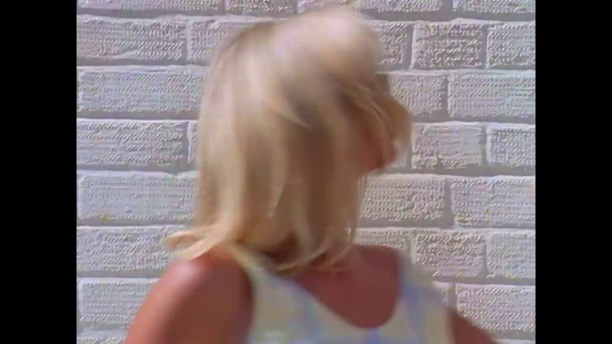
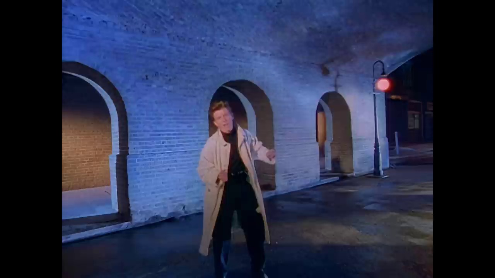
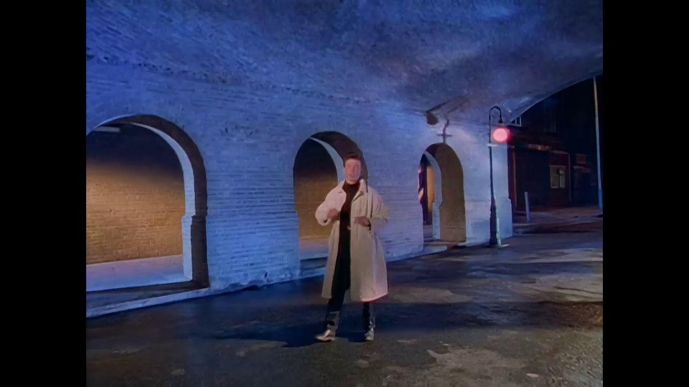
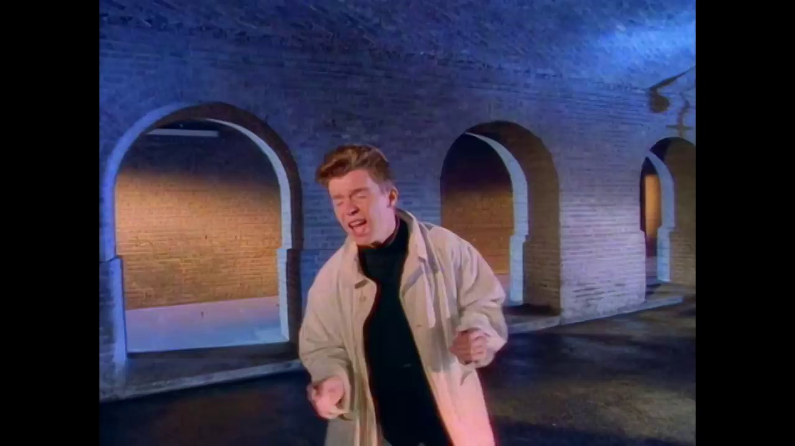
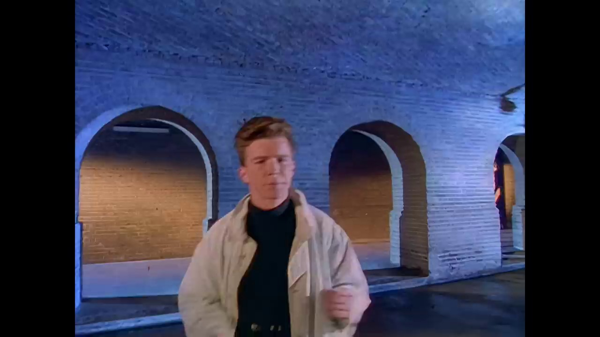
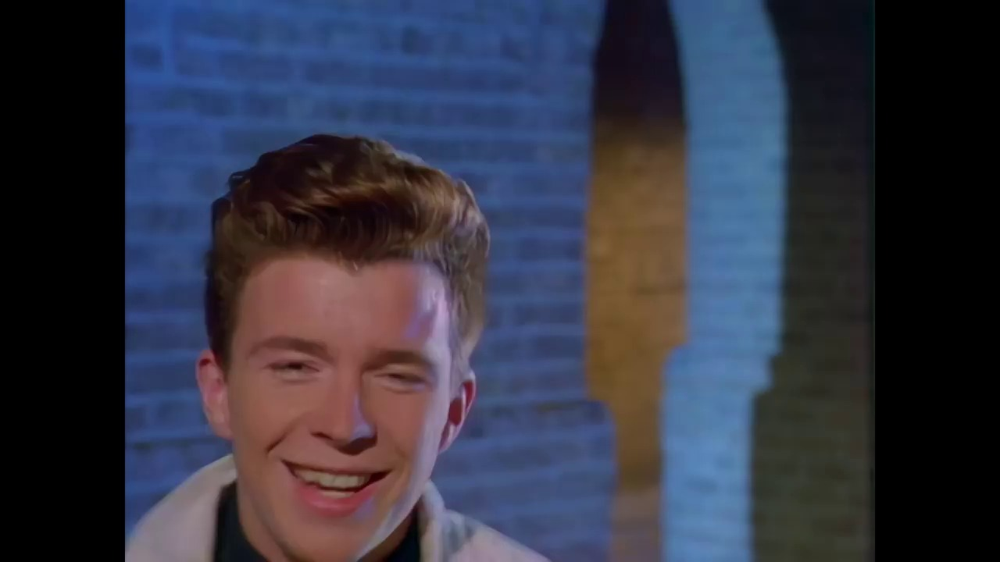
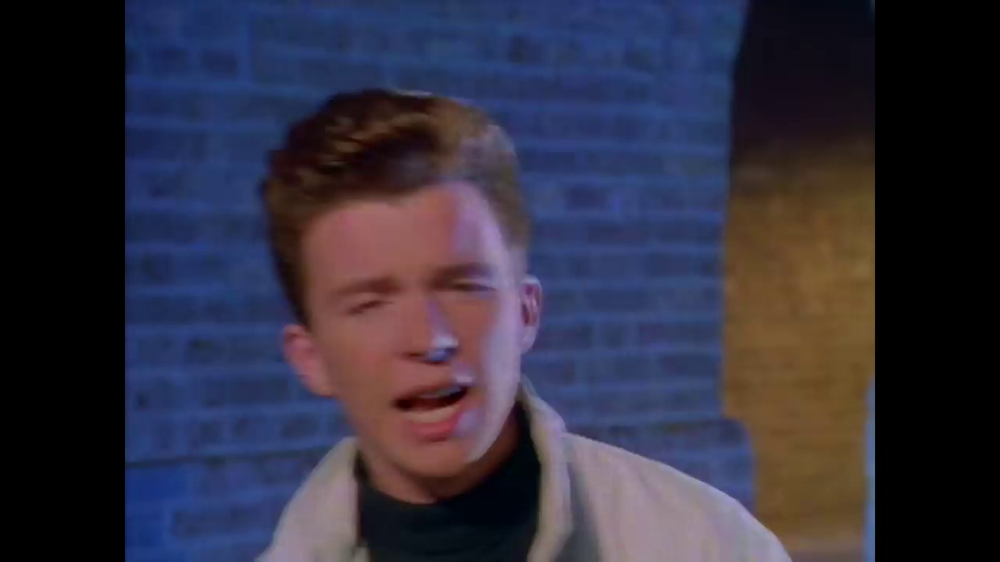
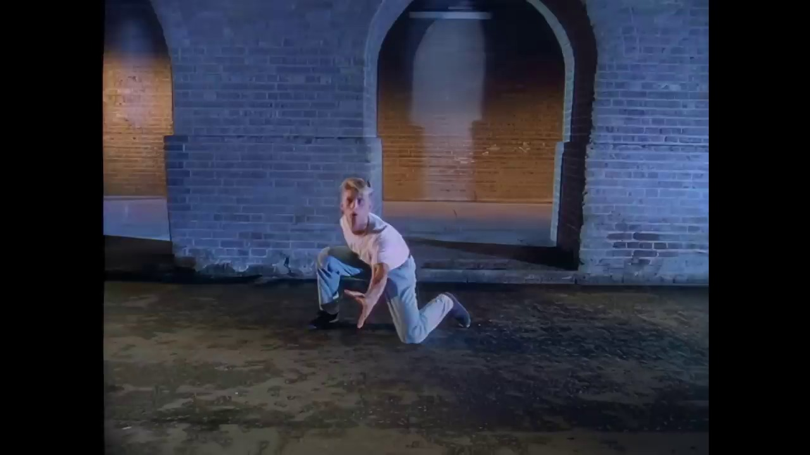
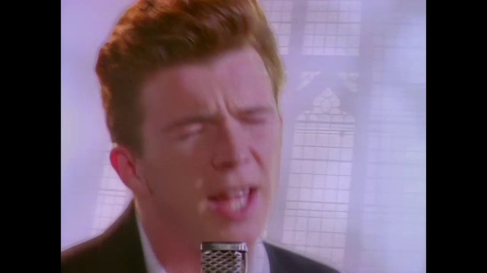

Key Moments











Summary & Script
Rick Astley - Never Gonna Give You Up (Official Video) (4K Remaster)
Source: https://www.youtube.com/watch?v=dQw4w9WgXcQ
Video ID: dQw4w9WgXcQ
Overview
The video is the official 4K remaster of Rick Astley’s classic 1987 pop hit “Never Gonna Give You Up.” It features the original lyrics performed by Astley, accompanied by the iconic music‑video visuals that have become synonymous with internet “Rickrolling.” The purpose of the upload is to present the song in high‑definition audio and video quality for fans and new listeners alike.
Topics Covered
- Introductory chorus – The song opens with the recognizable lines “We’re no strangers to love… you know the rules and so do I,” establishing the upbeat, synth‑driven pop vibe.
- Commitment pledge – Astley sings about unwavering dedication (“Never gonna give you up, never gonna let you down…”) emphasizing loyalty and honesty.
- Emotional connection – References to a long‑standing relationship and unspoken feelings (“Your heart’s been aching but you’re too shy to say it”) add a personal, relatable touch.
- Refrain repetition – The catchy hook repeats multiple times, reinforcing the song’s memorability and making it ideal for meme culture.
- Bridge and vocal embellishments – Brief “Ooh, give you up” interludes provide dynamic variation before returning to the main chorus.
Key Takeaways
- The track’s simple, sing‑along lyrics and upbeat melody have cemented it as a timeless pop anthem.
- Its themes of steadfast loyalty and honesty resonate across generations.
- The repetitive, hook‑laden structure makes it instantly recognizable and perfect for viral internet use.
- The 4K remaster delivers clearer audio and visuals, enhancing the original’s production value.
- Rick Astley’s performance remains charismatic, contributing to the song’s lasting appeal.
Notable Quotes
- “Never gonna give you up, never gonna let you down, never gonna run around and desert you.”
- “Your heart’s been aching but you’re too shy to say it.”
- “We know the game and we’re gonna play it.”
Podcast Script
JORDAN: Welcome to Episode 18 of SlackCasts by PodSlacker — where AI does the watching so you can do the listening. If you want a richer experience with today's episode, visit PodSlacker dot com slash SlackCasts — you'll find a written summary, key frame moments from the video, and an interactive AI chat to explore the topic as deep as you like. Now let's get into it.
MIKE: Today we're dissecting the official 4K remaster of Rick Astley's 1987 hit “Never Gonna Give You Up.” Beyond the meme lore, it's a pristine example of late‑80s synth‑pop production, so let's unpack why the high‑def upgrade matters.
JORDAN: The opening chorus—“We’re no strangers to love, you know the rules and so do I”—sets a tonal template with a gated reverb snare and a bright FM synth line. In the original, those elements were already crisp, but the 4K video reveals the subtle envelope shaping on the synth pads that were previously masked.
MIKE: That kind of clarity translates to a stronger emotional hook for new listeners. The lyrical premise—establishing shared rules—creates instant rapport, which is why the song scales so well from club floor to internet meme.
JORDAN: Moving into the commitment pledge, the production uses a layered vocal stack: Astley’s baritone leads, doubled an octave up, then a faint choir‑like pad fills the chorus. The remaster isolates those harmonics, making the “Never gonna give you up” line feel more expansive, almost like a pledge broadcast over a stadium.
MIKE: From a strategic standpoint, that expansiveness fuels replayability. Marketers love a track that can be looped in ads, and the lyrical promise of loyalty dovetails nicely with brand narratives about reliability.
JORDAN: The bridge introduces those “Ooh, give you up” vocal riffs. Technically, they're filtered through a low‑pass at 2 kHz, creating a breathy texture. In the 4K mix, the filter sweep is more pronounced, giving the bridge a dynamic rise before dropping back into the main hook.
MIKE: That dynamic shift is key for meme timing—the brief dip creates a natural pause that creators can sync with visual punchlines. It's a structural cue that the internet has exploited for over two decades.
JORDAN: Lyrically, lines like “Your heart’s been aching but you’re too shy to say it” add a layer of relational nuance. The vocal delivery uses slight rubato on “ache‑ing,” and the remaster preserves that micro‑timing, enhancing the song’s emotional authenticity.
MIKE: Authenticity is what keeps the track from feeling stale. Even when it’s repurposed for parody, the underlying sincerity lets it function as a genuine pop anthem, which explains its cross‑generational resonance.
JORDAN: Finally, the repetitive hook—four iterations of the chorus—leverages the contagion principle in cognitive psychology. The 4K version extends the high‑frequency range, making the synth arpeggios more discernible, which reinforces the earworm factor.
MIKE: In summary, the remaster isn’t just a visual upgrade; it re‑exposes the production craftsmanship that made the track a template for viral longevity. Higher fidelity amplifies both the technical brilliance and the lyrical sincerity, ensuring the song remains a cultural touchstone.
JORDAN: That's a wrap on today's SlackCast. Head over to PodSlacker dot com slash SlackCasts for the written summary, visual key moments, and an AI chat to dive even deeper into today's topic. Until next time — slack off smarter.